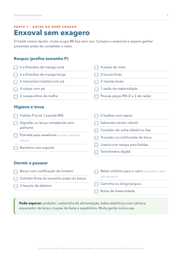
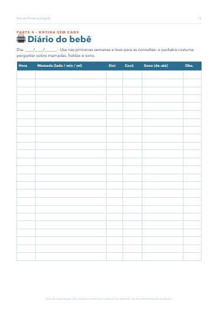
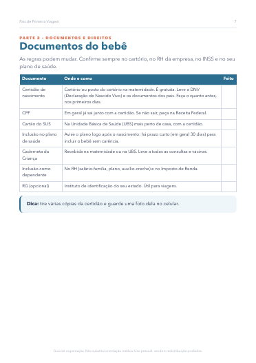
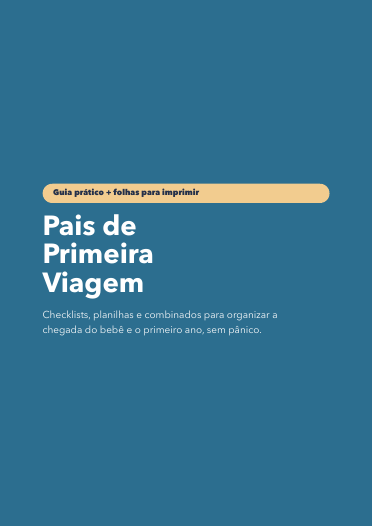
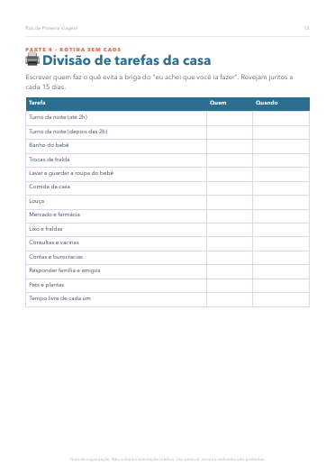
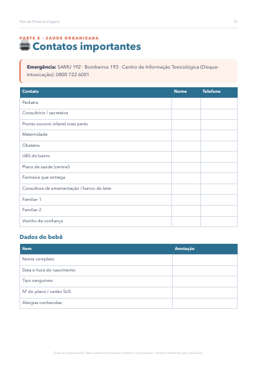

Enxoval sem exagero, mala da maternidade, documentos do bebê, diário de mamadas e fraldas, divisão de tarefas e orçamento do primeiro ano. Tudo em checklists prontos.
QUERO O GUIA POR R$ 24,90


Este guia organiza tudo isso em listas e folhas que vocês preenchem juntos. Menos coisa para lembrar, mais tempo com o bebê.
Enxoval essencial (e o que pode esperar), mala da maternidade para mãe, bebê e acompanhante, casa pronta e plano de parto.
Certidão, CPF, cartão do SUS, plano de saúde, licenças e o que perguntar no RH e no INSS.
Testes do recém-nascido, checklist da alta e regras de visita (com mensagem pronta para a família).
Diário de mamadas, fraldas e sono, divisão de tarefas do casal e lista da rede de apoio.
Contatos de emergência, consultas e vacinas, perguntas para o pediatra e sono seguro.
Orçamento do primeiro ano, puerpério e saúde mental dos pais, primeiras vezes e carta para o futuro.



Não. É um PDF que chega por e-mail logo após o pagamento. Você lê no celular e imprime as folhas que quiser.
Serve, e é o melhor momento: as partes 1 e 2 são para fazer antes do parto. O restante acompanha os primeiros meses.
Não. O guia organiza a rotina e as informações. Saúde, alimentação e remédios são sempre com o pediatra e a equipe de saúde.
É. Você compra com o seu e-mail e encaminha o PDF para os futuros pais, junto com as fraldas.